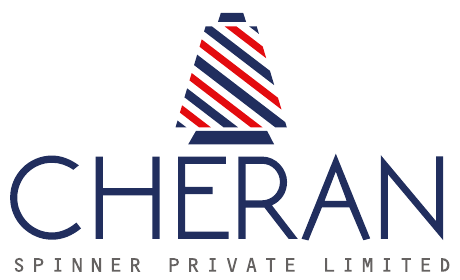

Erode · Tamil Nadu · India
Precision. Quality. Innovation. Every Yarn Tells a Story.
About Cheran
Cheran Spinner Private Limited, established in 1991, is a manufacturer of yarn located near Erode, a major Indian textile centre, serving domestic and global customers.
All enquiries are replied to within 2 hours, according to the company brochure.
Company history beyond the brochure: [placeholder, to be supplied by Cheran].
Yarn Catalogue
Some yarn varieties may be out of stock or not currently running. Production is subject to order confirmation and an MOQ of 5 tonnes.
Product images are illustrative. Counts are from Cheran's product list. Items without counts are not listed there.
Manufacturing & Machinery
Demo images: illustrative stock/sample photos, not Cheran's factory. Genuine factory photos will replace them.
Quality & Sustainability
Cellulosic fibres including Birla, Lenzing and bamboo rayon, per the brochure.
Branded carding, compact, vortex and autoconer lines, listed under Machinery.
Powered by 5.5 MW wind and 2 MW solar capacity (brochure).
The brochure displays FSC, OEKO-TEX and Sustainable certification marks. Certificate numbers and scope: [placeholder, to be verified by Cheran before launch].
Corporate Enquiry
Deepan Chakkaravarthi G, Marketing
Phone / WhatsApp: +91 7373855777
Email: marketing@cheranspinnerlimited.com
SF No. 477/1, Anangur Main Road, Sowthapuram (P.O.), Patharai, Erode – 638 008, Tamil Nadu, India.